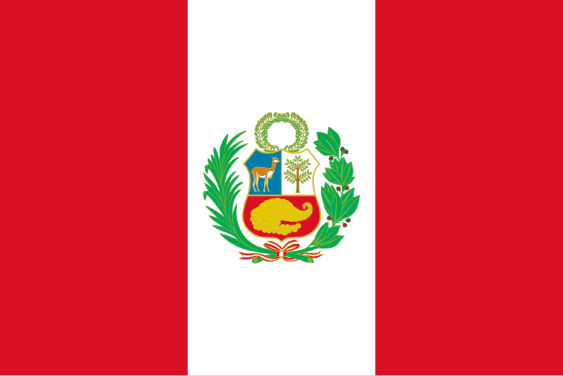

Breve historia de la gastronomía chilena
La historia de la cocina chilena tiene su origen en diversas culturas y pueblos, lo que la hace rica y diversa, combinando sabores, gustos, aromas y platos tradicionales únicos y característicos.
Desde los pueblos indígenas, como los atacameños en el norte o los mapuches en el sur, hasta los colonizadores europeos, como los españoles, las raíces de la gastronomía chilena son muchas.
Los sabores de la cocina chilena incluyen elementos como pescados y mariscos como jaibas gigantes y anguilas de mar, carne de vacuno, pollo y cerdo, maíz (choclo), patatas, calabaza, trigo, entre otros.
A partir de ahí, se han creado diversas recetas que exploran todas estas raíces, creando platos típicos únicos.

Breve historia de la gastronomía peruana
La gastronomía peruana destaca por su rica historia, la aportación de diferentes culturas y las favorables condiciones ambientales para el cultivo de ingredientes locales. Va más allá de la simple degustación, convirtiéndose en una experiencia cultural y viajera. En diferentes regiones, como el norte, el centro y el sur, la cocina refleja la identidad local, como en el caso de la Pachamanca, un plato de origen ancestral vinculado a la cultura Wari y que representa el agradecimiento a la tierra.
Además, la cocina peruana se ha visto fuertemente influenciada por la inmigración española, africana, china, japonesa e italiana, lo que ha enriquecido aún más sus recetas. Platos como el tiradito, el arroz chaufa y los anticuchos son ejemplos de la fusión de estas culturas y hoy son reconocidos en todo el mundo. Esta mezcla de tradiciones gastronómicas contribuye a la diversidad y fama de la cocina peruana.
Los superalimentos peruanos también han ganado protagonismo mundial, con un aumento de las exportaciones de productos como el aguacate, el café y los arándanos. Las condiciones medioambientales del país favorecen el cultivo de estos alimentos, lo que refuerza aún más su gastronomía. Viajar a Perú es una oportunidad para conocer este rico patrimonio culinario y explorar sus diversas influencias culturales.
Fonte: Gastronomia Peruana: tradição, mestiçagem e sabores locais

Empanadas
Las empanadas, al igual que en otros países andinos como Argentina, son otro plato popular de la gastronomía chilena.
La opción más típica y conocida es la empanada de pino (carne picada), que mezcla trozos de huevo, cebolla, aceitunas y pasas sultanas con la carne en una masa horneada en forma de media luna.
Pero no sólo eso, otros sabores también son populares en las cafeterías y panaderías chilenas, y son uno de los platos más emblemáticos de Chile
Ingresos
Ingredientes
Pasta:
- 1 1/4 tazas (300 ml) de agua
- 1/2 taza (100 g) de mantequilla derretida
- 2 cucharaditas de sal
- 5 tazas (600 g) Harina de trigo
- 2 cucharaditas de levadura en polvo
- 4 yemas de huevo tamizadas (para pincelar las empanadas antes de hornearlas)
Relleno:
- 300 g de carne picada
- 3 cucharadas de aceite de oliva
- 1 cebolla picada
- 1 cucharadita de comino
- 1 cucharada de pimentón
- 1 cucharadita de pimienta negra o guindilla de Calabria
- 1 cucharadita de sal
- 1 taza de aceitunas en rodajas
- 4 cucharadas de pasas sultanas
- 2 huevos duros picados
Preparación:
-
Relleno:
En una cacerola mediana, a fuego medio, dorar la carne picada, removiendo constantemente para que no se formen grumos.
A continuación, añadir el aceite de oliva y la cebolla y rehogar durante unos 2 minutos. Sazone con comino, pimentón, pimienta y sal. Saltear brevemente durante unos 2 minutos. Apague el fuego y añada las aceitunas, las pasas sultanas y los huevos picados. Reservar. Utilizar en frío.
-
Pasta:
En un bol, mezclar el agua, la mantequilla, la sal y la levadura y añadir poco a poco la harina hasta obtener una masa homogénea, sin amasar. A continuación, envolver la masa en film transparente y dejar reposar en la nevera durante 30 minutos.
-
Montaje:
Pasado este tiempo, dividir la masa en 8 partes iguales (si se prefiere más grande, dividir en 6 partes). Extender los discos y rellenar cada uno. Sella los bordes para formar las empanadas.
Colocar las empanadas una al lado de la otra en una bandeja de horno, dejando espacio entre ellas. Pincelar con la yema de huevo y hornear a temperatura media (180°C) durante unos 20 minutos o hasta que estén doradas. Servir como aperitivo.
Un poco sobre este plato...
La palabra "empanada" procede del castellano empanar, que significa "encerrar algo en una masa o pan y cocerlo en el horno". Las empanadas, incluidas las chilenas, tienen su origen en la costumbre de rellenar panes con carne o verduras, que los pastores y viajeros llevaban consigo para comer en el campo.
Uno de los secretos de la empanada chilena reside en la masa. Tradicionalmente se elabora con harina de trigo, agua y manteca de cerdo. Luego se recubre con clara de huevo para que se dore al hornearla. Es muy importante no amasarla demasiado ni durante poco tiempo. También es difícil conseguir una receta con las proporciones exactas, porque es un tesoro de todo cocinero que se transmite de madre a hija, de generación en generación.
Un poco sobre la cultura...
Como la pasta lo es para Italia, o la hamburguesa para Estados Unidos, para Chile la empanada de pino es un plato sencillamente emblemático. El pino es una preparación muy chilena, quizás la base de su cocina, que se prepara principalmente con carne picada a cuchillo (a veces molida), cebolla picada, ají de color y una pizca de comino.
La empanada chilena es muy popular en las casas de campo y en las cocinas, y es símbolo de compartir y celebrar. Se puede saborear con un buen vino tinto, pero va bien con cualquier bebida o incluso servida con una deliciosa barbacoa y sus rellenos son diversos.